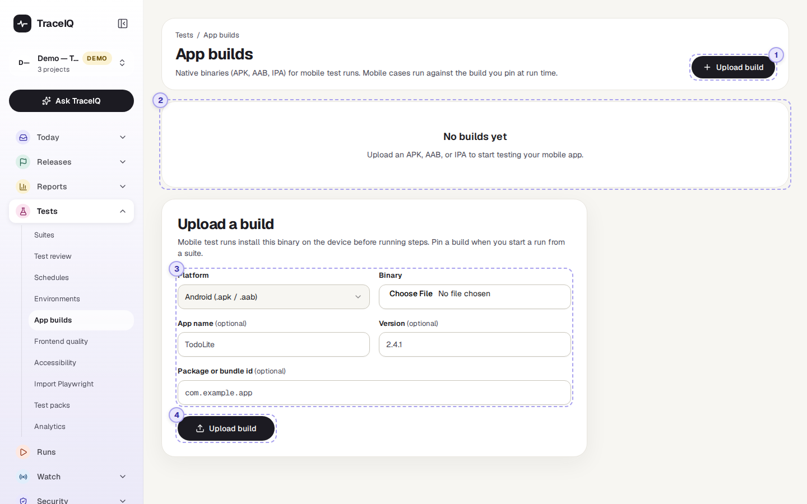
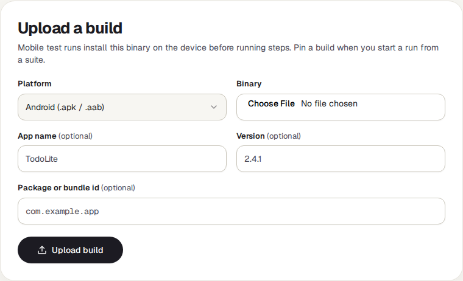

App builds
Mobile tests run your real app on a phone (or a phone simulator). This page keeps the app files they install: you upload a version of your Android or iOS app once, then pick it when you start a run.
What it is for
A web test opens a web address; a mobile test has to install the app first. Each file you upload here is a build: one version of the app, such as "TodoLite 2.4.1 for Android". Keeping the builds in TraceIQ answers "Which version of the app was this run testing?" and lets you test a new version before it goes to the app stores.
Testers
Upload the release candidate and run the mobile suite against it.
Developers
Check that a fix works in the real app, on the device the tests use.
Release managers
Keep every candidate version in one place, with its version number and upload date.
Where to find it: in the sidebar, open Tests → App builds. It shows the project selected at the top of the sidebar.
A tour of the screen
The demo has no app builds, so the screenshot shows the page as it first appears in a project: a note that there are no builds, and the upload form. The numbers match the sections below.

Upload build
The button at the top right opens the upload form on the right of the page. When a project has no builds yet, the form is already open below the note.
The list of builds
While there are none, this place says "No builds yet". Once you have uploaded builds, it becomes a list, boxed into Android and iOS. Each row shows the app's name, its version, when it was uploaded and the file size. Click a row to see the build on the right:
- Version, Size and Uploaded (in your own time zone).
- Package or bundle id: the app's unique name on the phone, such as
com.example.app. - Download binary downloads the exact file that was uploaded. The download link it opens works for one hour.
- Delete build, after asking. The file is removed. Runs that were set to use this build no longer get an app to install.
The upload form

| Field | What to fill in |
|---|---|
| Platform | Android takes an .apk or .aab file, iOS an .ipa file. A file whose ending doesn't match the platform is refused. |
| Binary | The app file itself, as your developers or build system produce it. |
| App name | Optional. Without it, the file name is used (without its ending). |
| Version | Optional, for example 2.4.1. TraceIQ doesn't read it from the file, so type the version you want to see in the list. |
| Package or bundle id | Optional. The app's unique name on the phone. |
Uploading
Upload build sends the file to TraceIQ's file storage; a large app can take a while. When it is done, the build appears in the list and is selected.
Watch it in use
How to…
…test a new version of the app
- Press Upload build, choose the platform and the file, and type the version number.
- Press Upload build in the form and wait for it to appear in the list.
- Open the mobile suite (Tests → Suites). Next to Run suite, a menu now offers the project's builds: choose the new one.
- Press Run suite. The build is installed on the device before the tests start.
…get a copy of a build
- Click the build in the list.
- Press Download binary. The file opens in a new tab and downloads; the link stops working after an hour, so press the button again later rather than sharing the link.
Good to know
- Who can do what. Anyone with access to the project can see and download builds. Uploading and deleting needs the editor role.
- The build menu on a suite only appears once the project has at least one build. It holds "No app build (web)" plus every build, and the choice applies to runs started from that page.
- Mobile tests need a phone to run on. Your TraceIQ administrator has to set up the mobile test machine (an Android emulator or a device cloud). iOS apps run on a device cloud only.
- Builds belong to one project. To use the same app in another project, upload it there too.
Related pages
Frontend quality
The next page in this guide: broken links, page speed and fragile selectors on your website.
Suites
Where you pick a build next to Run suite.
Environments
The addresses and secrets tests use, for web and mobile alike.
Runs
The result of every mobile run, with screenshots and a screen recording.